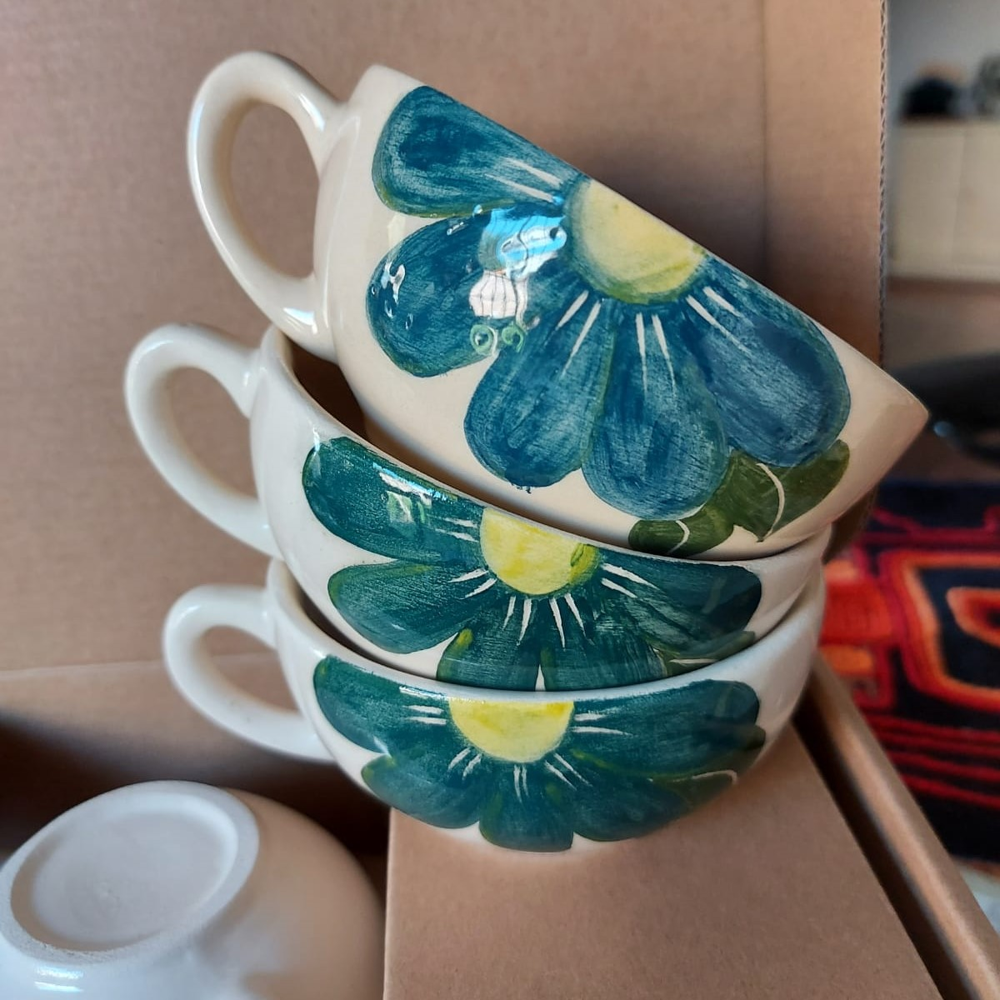
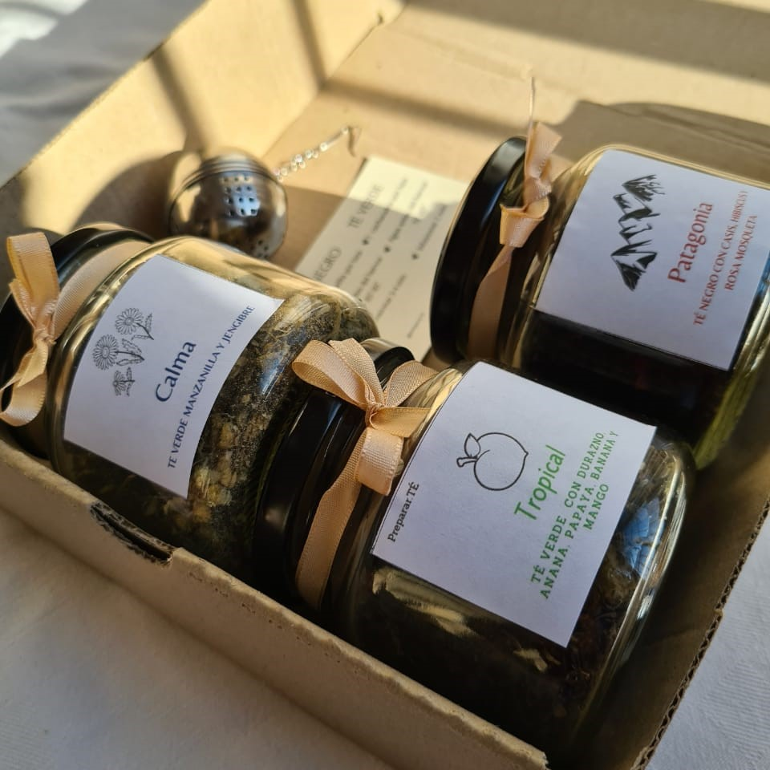

PRODUCTOS

Infusores
Nuestros infusores estan realizados en aluminio. Se deben utilizar colocando las hebras dentro de los mismos y luego cerrarlo y colocarlo en la taza copn aguia caliente o en una tetera en su defecto.

Tazas
Tazas hechas de ceramica. Se pueden encargar distintos tamaños y distintas decoraciones. Tambien se pueden encargar tazas que funcionan tambien como teteras.

Frascos
Frascos de vidrios que contienen 250 gramos de te en hebras. Las mismas solo pueden ser de un sabor. Los 250 gramos del frasco rinden para aproximadamente 20 tazas de te.